Personalidade em cada traço
Mascotes
Da primeira ideia à exposição: personagens com expressão, presença e uma linguagem própria.
Ver personagens
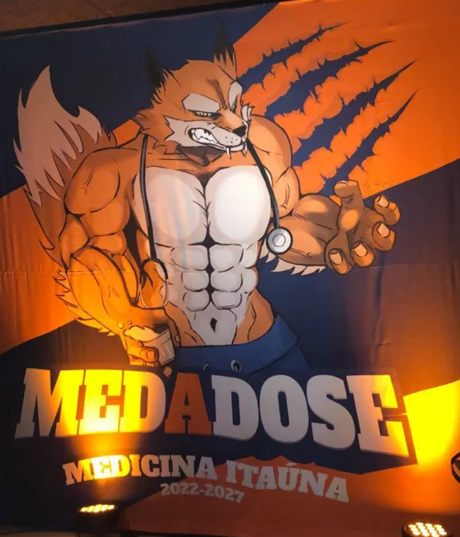
Criação de personagemIlustração e aplicação em evento de formatura.
Do esboço à cor
Trabalhos onde desenvolvi mascotes para formaturas e eventos ao redor de Minas Gerais.

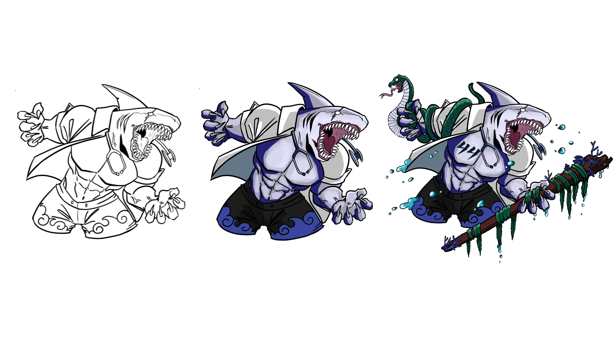

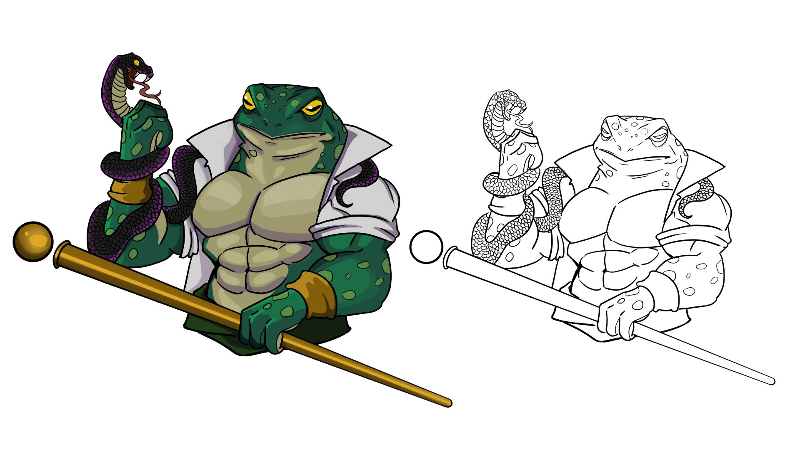

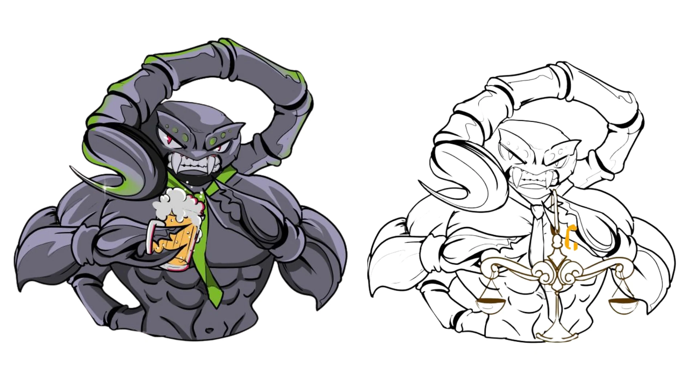

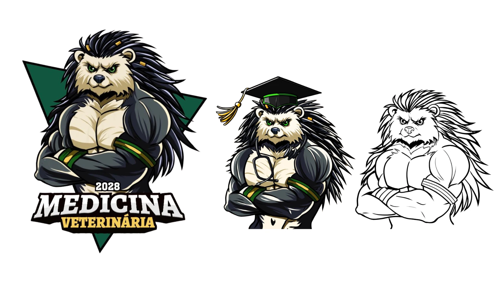

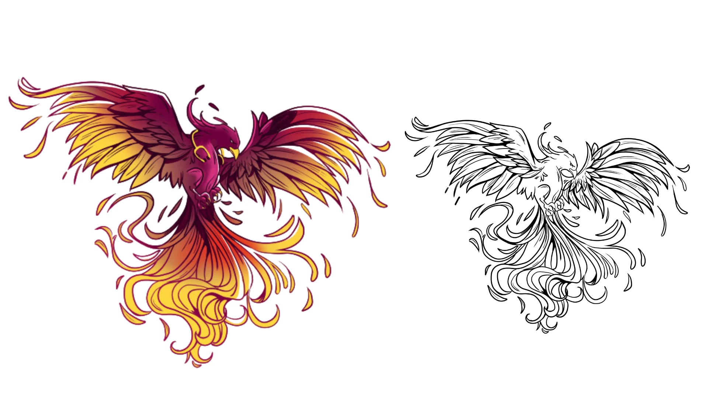

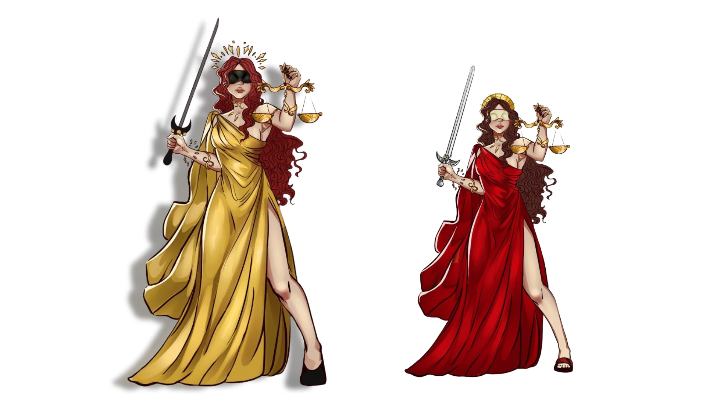

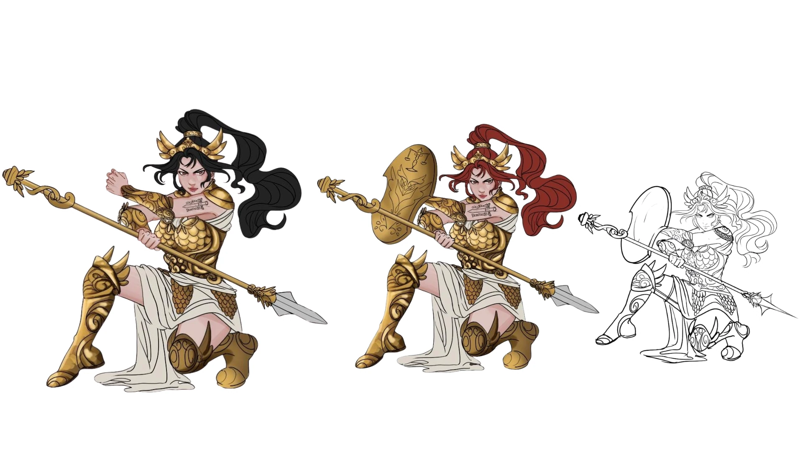

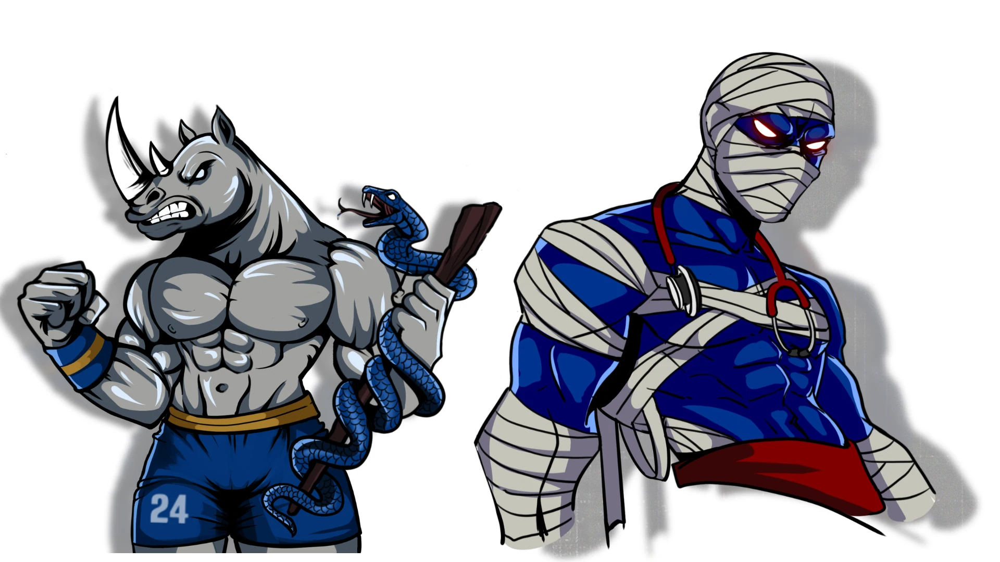

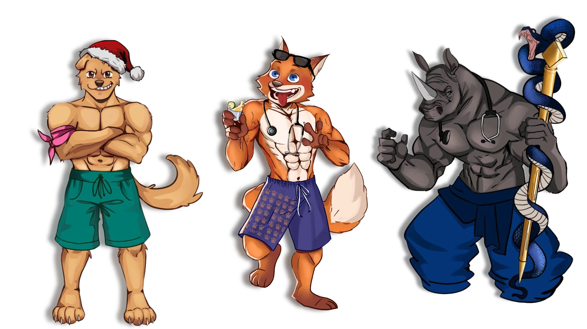

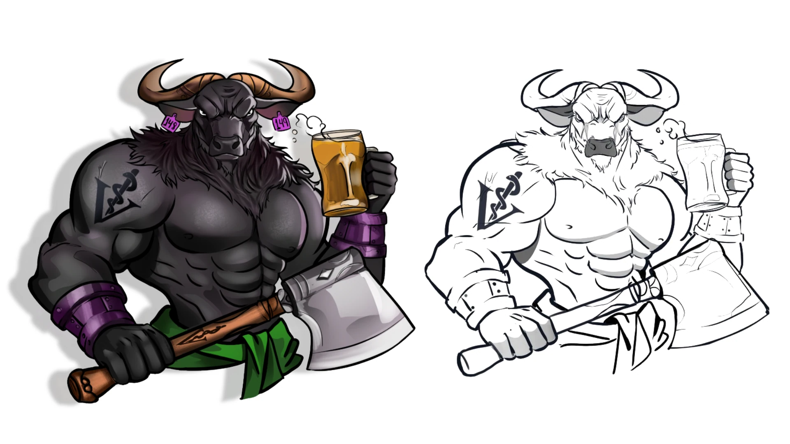
Fora do papel
Registros das identidades em materiais, espaços e comunicação digital.


Contato
Vamos criar
algo juntos?
Tem um projeto em mente? Vamos conversar sobre ideias, histórias e possibilidades.
danielavieirac00@gmail.com